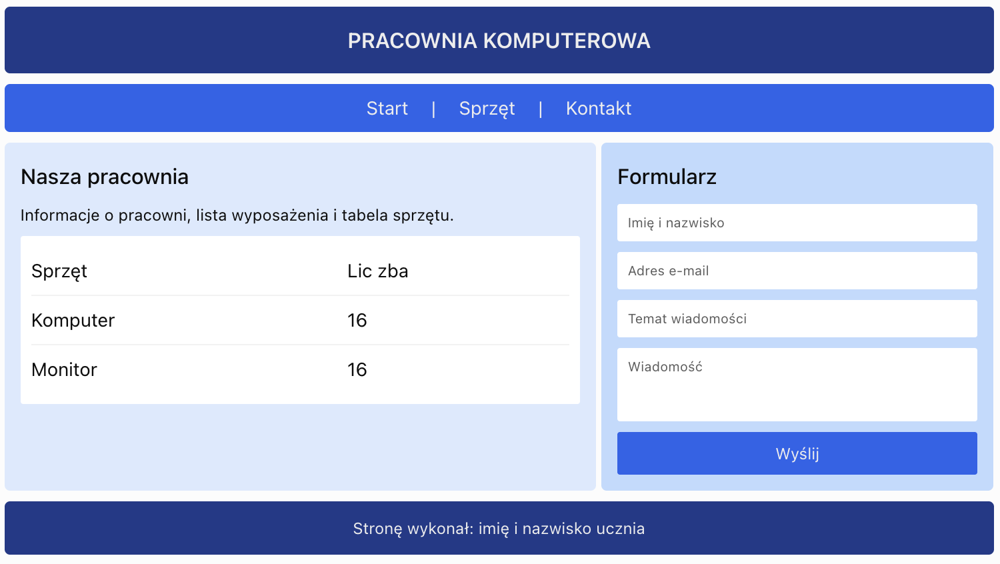

Tworzenie układu witryny za pomocą HTML i CSS – ćwiczenia w standardzie INF.03
Cel lekcji: samodzielne wykonanie strony internetowej zgodnej z podaną specyfikacją, z wykorzystaniem semantycznego HTML5, zewnętrznego arkusza CSS, modelu pudełkowego i Flexbox.
Czas: 2 × 45 minut.
1. Wprowadzenie
Podczas praktycznej części egzaminu INF.03 jednym z możliwych zadań jest przygotowanie witryny internetowej zgodnie z wymaganiami zapisanymi w arkuszu egzaminacyjnym.
Polecenie może określać:
- nazwy i rozmieszczenie plików,
- strukturę dokumentu HTML,
- podział strony na bloki,
- zawartość poszczególnych bloków,
- kolory, wymiary i odstępy,
- formatowanie tekstu, tabel i formularzy,
- zastosowanie wskazanych selektorów CSS,
- działanie odnośników i elementów formularza.
W tego typu zadaniach ważna jest nie tylko estetyka strony, lecz przede wszystkim zgodność wykonania z poleceniem.
📌 Zapamiętaj
Jeśli specyfikacja wymaga konkretnej nazwy pliku, koloru, rozmiaru, selektora lub właściwości CSS, należy zastosować dokładnie wskazane rozwiązanie.
2. Analiza polecenia egzaminacyjnego
Przed rozpoczęciem kodowania przeczytaj całe polecenie. Następnie podziel wymagania na kilka grup.
| Grupa wymagań | Co należy sprawdzić? |
|---|---|
| Pliki | Nazwy, rozszerzenia, katalogi i ścieżki. |
| HTML | Wymagane znaczniki, teksty, obrazy, tabele i formularze. |
| Układ | Liczba bloków, ich położenie, szerokości i wysokości. |
| CSS | Kolory, czcionki, obramowania, marginesy i odstępy. |
| Działanie | Odnośniki, przyciski i inne elementy interaktywne. |
| Kontrola | Zgodność końcowej strony z każdym punktem polecenia. |
Przykładowe wymaganie
„Blok nagłówkowy ma kolor tła #1E3A8A, biały tekst, wysokość 100 px i wyśrodkowaną zawartość”.
Na podstawie takiego polecenia można przygotować:
header {
background-color: #1E3A8A;
color: white;
height: 100px;
display: flex;
justify-content: center;
align-items: center;
}Każda właściwość wynika z określonego wymagania.
3. Organizacja plików witryny
Przed rozpoczęciem pracy utwórz katalog projektu.
Przykładowa struktura
witryna/
|
|-- index.html
|
|-- styl.css
|
|-- img/
|
|-- logo.png
Plik index.html
zawiera strukturę strony,
natomiast styl.css
odpowiada za jej wygląd.
Podłączenie arkusza CSS
<link rel="stylesheet" href="styl.css">Wstawienie obrazu
<img src="img/logo.png" alt="Logo witryny">📌 Zapamiętaj
Wielkość liter i nazwy plików mają znaczenie, szczególnie po opublikowaniu strony na serwerze.
4. Schemat układu witryny
W zadaniach egzaminacyjnych często przedstawiony jest schemat blokowy strony.
Przykładowy układ:
+------------------------------------------+
| NAGŁÓWEK |
+------------------------------------------+
| MENU |
+--------------------+---------------------+
| | |
| BLOK LEWY | BLOK PRAWY |
| | |
| Informacje | Formularz |
| i tabela | |
| | |
+--------------------+---------------------+
| STOPKA |
+------------------------------------------+Układ można wykonać z wykorzystaniem semantycznych znaczników HTML5.
header– nagłówek,nav– menu nawigacyjne,main– główna część strony,section– wydzielona sekcja,aside– blok uzupełniający,footer– stopka.
Do rozmieszczenia kolumn zastosujemy Flexbox.
5. Przygotowanie struktury HTML5
Najpierw utwórz wszystkie wymagane bloki strony, a dopiero później rozpocznij ich formatowanie.
Przykład
<!DOCTYPE html>
<html lang="pl">
<head>
<meta charset="UTF-8">
<meta name="viewport"
content="width=device-width, initial-scale=1.0">
<title>Moja witryna</title>
<link rel="stylesheet" href="styl.css">
</head>
<body>
<header>
<h1>Moja witryna</h1>
</header>
<nav>
<a href="#informacje">Informacje</a>
<a href="#kontakt">Kontakt</a>
</nav>
<main>
<section id="informacje">
<h2>Informacje</h2>
</section>
<aside id="kontakt">
<h2>Kontakt</h2>
</aside>
</main>
<footer>
<p>Autor strony</p>
</footer>
</body>
</html>📌 Dobra praktyka
Zadbaj o poprawne zagnieżdżenie znaczników i czytelne wcięcia kodu. Ułatwi to późniejsze poprawianie błędów.
6. Zewnętrzny arkusz CSS
W arkuszu CSS zapisujemy reguły odpowiadające za wygląd strony.
Budowa reguły CSS
selektor {
właściwość: wartość;
}Przykład
h1 {
color: white;
font-size: 32px;
text-align: center;
}Jeżeli polecenie wskazuje konkretny selektor, należy go zastosować.
Przykładowo:
#lewy {
width: 60%;
}
#prawy {
width: 40%;
}
Selektor #lewy
odnosi się do elementu
o identyfikatorze
id="lewy".
7. Formatowanie ogólne strony
Przed formatowaniem poszczególnych bloków warto ustawić podstawowe właściwości strony.
* {
box-sizing: border-box;
}
body {
margin: 0;
font-family: Arial, sans-serif;
background-color: #F1F5F9;
color: #1F2937;
}Dlaczego box-sizing?
Wartość
border-box
sprawia, że zadeklarowana
szerokość elementu
obejmuje również
jego padding i obramowanie.
.blok {
width: 300px;
padding: 20px;
border: 2px solid black;
box-sizing: border-box;
}Całkowita szerokość pudełka wynosi 300 px.
📌 Uwaga egzaminacyjna
Jeśli polecenie wymaga innego sposobu obliczania wymiarów lub konkretnego modelu pudełkowego, należy zachować zgodność ze specyfikacją.
8. Formatowanie nagłówka
Nagłówek zwykle znajduje się w górnej części strony. Może zawierać tytuł, logo lub dodatkowy tekst.
HTML
<header>
<h1>CENTRUM EDUKACJI IT</h1>
</header>CSS
header {
height: 100px;
background-color: #1E3A8A;
color: white;
display: flex;
justify-content: center;
align-items: center;
}
header h1 {
margin: 0;
}W tym przykładzie Flexbox wyśrodkowuje nagłówek w obu osiach.
10. Tworzenie układu kolumn
W tym przykładzie główna część strony składa się z dwóch kolumn.
HTML
<main>
<section id="lewy">
<h2>Blok lewy</h2>
</section>
<aside id="prawy">
<h2>Blok prawy</h2>
</aside>
</main>CSS
main {
display: flex;
}
#lewy {
width: 60%;
padding: 25px;
background-color: #DBEAFE;
}
#prawy {
width: 40%;
padding: 25px;
background-color: #BFDBFE;
}
Dzięki display: flex
obie kolumny znajdują się
obok siebie.
Kontrola szerokości
W naszym przykładzie:
60% + 40% = 100%
Przy zastosowaniu
box-sizing: border-box
padding mieści się
w zadeklarowanej szerokości.
📌 Zapamiętaj
Jeśli w poleceniu podano szerokości bloków, sprawdź, czy nie zostały one przekroczone przez padding, obramowania lub dodatkowe odstępy.
11. Formatowanie tabeli
Tabela powinna zawierać
dane w wierszach i kolumnach.
Do nagłówków kolumn
stosujemy znacznik
th.
HTML
<table>
<tr>
<th>Kurs</th>
<th>Cena</th>
</tr>
<tr>
<td>HTML</td>
<td>200 zł</td>
</tr>
<tr>
<td>CSS</td>
<td>250 zł</td>
</tr>
</table>CSS
table {
width: 100%;
border-collapse: collapse;
}
th,
td {
border: 1px solid #64748B;
padding: 10px;
text-align: center;
}
th {
background-color: #1E3A8A;
color: white;
}
tr:nth-child(even) {
background-color: #E2E8F0;
}Ważne właściwości
| Właściwość | Znaczenie |
|---|---|
border-collapse |
Określa sposób łączenia obramowań komórek. |
padding |
Ustawia odstępy wewnątrz komórek. |
text-align |
Wyrównuje zawartość komórek. |
nth-child(even) |
Wybiera elementy o parzystej pozycji wśród rodzeństwa. |
12. Formatowanie formularza
Formularz może zawierać pola tekstowe, listy wyboru, pola liczbowe oraz przyciski.
HTML
<form action="#" method="get">
<label for="imie">
Imię:
</label>
<input type="text"
id="imie"
name="imie"
required>
<label for="kurs">
Wybierz kurs:
</label>
<select id="kurs" name="kurs">
<option value="html">HTML</option>
<option value="css">CSS</option>
</select>
<button type="submit">
Wyślij
</button>
</form>CSS
form {
display: flex;
flex-direction: column;
gap: 12px;
}
input,
select,
button {
padding: 10px;
font-size: 16px;
}
input,
select {
border: 1px solid #64748B;
border-radius: 5px;
}
button {
background-color: #2563EB;
color: white;
border: none;
cursor: pointer;
}
button:hover {
background-color: #1D4ED8;
}Flexbox ustawia elementy formularza jeden pod drugim.
📌 Uwaga
Formatowanie formularza nie oznacza automatycznie, że formularz zapisuje lub przetwarza dane. Do tego może być potrzebny dodatkowy skrypt, jeśli wymaga go polecenie.
13. Formatowanie stopki
Stopka znajduje się na końcu witryny i może zawierać informacje o autorze.
HTML
<footer>
<p>Stronę wykonał: Jan Kowalski</p>
</footer>CSS
footer {
padding: 20px;
background-color: #1E3A8A;
color: white;
text-align: center;
}
footer p {
margin: 0;
}Stopka znajduje się poniżej głównej części strony.
14. Responsywność witryny
W nowoczesnych witrynach warto zadbać o poprawny wygląd na małych ekranach.
Jeżeli polecenie egzaminacyjne przewiduje konkretny układ, należy w pierwszej kolejności zachować zgodność z wymaganiami.
Przykład
@media (max-width: 700px) {
main {
flex-direction: column;
}
#lewy,
#prawy {
width: 100%;
}
nav {
flex-direction: column;
align-items: center;
}
}Na ekranie o szerokości do 700 px kolumny zostaną ustawione jedna pod drugą.
15. Sprawdzanie zgodności z poleceniem
Po zakończeniu kodowania należy porównać gotową witrynę z wymaganiami.
Lista kontrolna
- Czy nazwy plików są poprawne?
- Czy arkusz CSS jest prawidłowo podłączony?
- Czy strona ma odpowiedni tytuł?
- Czy wszystkie bloki są obecne?
- Czy bloki znajdują się we właściwych miejscach?
- Czy zastosowano wymagane kolory?
- Czy szerokości i wysokości odpowiadają poleceniu?
- Czy teksty i nagłówki są zgodne z wymaganiami?
- Czy tabela ma odpowiednią zawartość?
- Czy formularz zawiera wymagane pola?
- Czy odnośniki działają?
- Czy w kodzie nie ma błędów składniowych?
📌 Najważniejsza zasada
Nie zastępuj wymaganego rozwiązania innym tylko dlatego, że wygląda lepiej. W zadaniu egzaminacyjnym liczy się realizacja określonej specyfikacji.
16. Typowe błędy podczas wykonywania witryny
Błąd 1 – niepoprawna ścieżka do CSS
<link rel="stylesheet" href="style.css">
Jeśli plik nazywa się
styl.css,
taka ścieżka będzie błędna.
Błąd 2 – brak jednostki
header {
height: 100;
}Poprawnie:
header {
height: 100px;
}Błąd 3 – niewłaściwy selektor
lewy {
width: 60%;
}
Jeśli w HTML
zastosowano id="lewy",
poprawny selektor to:
#lewy {
width: 60%;
}Błąd 4 – brak kontenera Flexbox
main {
justify-content: center;
}Jeżeli chcemy zastosować układ Flexbox, należy również dodać:
main {
display: flex;
justify-content: center;
}Błąd 5 – przekroczenie szerokości
Dwa bloki o szerokościach 60% i 40% mogą nie zmieścić się obok siebie, jeśli dodatkowe marginesy lub obramowania zwiększają ich rozmiary.
Błąd 6 – niezgodna treść
Zastąpienie tekstu wskazanego w poleceniu własnym tekstem może oznaczać niespełnienie wymagania.
Błąd 7 – brak sprawdzenia strony
Po zapisaniu plików należy odświeżyć stronę w przeglądarce i sprawdzić jej działanie.
17. Kompletny przykład – „Centrum Edukacji IT”
Poniższy przykład przedstawia stronę z nagłówkiem, menu, dwoma kolumnami, tabelą, formularzem i stopką.
Plik index.html
<!DOCTYPE html>
<html lang="pl">
<head>
<meta charset="UTF-8">
<meta name="viewport"
content="width=device-width, initial-scale=1.0">
<title>Centrum Edukacji IT</title>
<link rel="stylesheet" href="styl.css">
</head>
<body>
<header>
<h1>CENTRUM EDUKACJI IT</h1>
</header>
<nav>
<a href="#oferta">Oferta</a>
<a href="#cennik">Cennik</a>
<a href="#kontakt">Kontakt</a>
</nav>
<main>
<section id="lewy">
<h2 id="oferta">Nasza oferta</h2>
<p>
Prowadzimy kursy
z zakresu tworzenia stron WWW.
</p>
<h3 id="cennik">Cennik kursów</h3>
<table>
<tr>
<th>Kurs</th>
<th>Cena</th>
</tr>
<tr>
<td>HTML5</td>
<td>200 zł</td>
</tr>
<tr>
<td>CSS3</td>
<td>250 zł</td>
</tr>
<tr>
<td>JavaScript</td>
<td>350 zł</td>
</tr>
</table>
</section>
<aside id="prawy">
<h2 id="kontakt">Zapisz się na kurs</h2>
<form action="#" method="get">
<label for="imie">Imię:</label>
<input type="text"
id="imie"
name="imie"
required>
<label for="kurs">Wybierz kurs:</label>
<select id="kurs" name="kurs">
<option value="html">HTML5</option>
<option value="css">CSS3</option>
<option value="js">JavaScript</option>
</select>
<button type="submit">
Wyślij
</button>
</form>
</aside>
</main>
<footer>
<p>
Centrum Edukacji IT – 2026
</p>
</footer>
</body>
</html>Plik styl.css
* {
box-sizing: border-box;
}
body {
margin: 0;
font-family: Arial, sans-serif;
background-color: #F1F5F9;
color: #1F2937;
}
/* Nagłówek */
header {
height: 100px;
background-color: #1E3A8A;
color: white;
display: flex;
justify-content: center;
align-items: center;
}
header h1 {
margin: 0;
text-align: center;
}
/* Menu */
nav {
display: flex;
justify-content: center;
gap: 20px;
padding: 15px;
background-color: #2563EB;
}
nav a {
padding: 10px 15px;
color: white;
text-decoration: none;
}
nav a:hover {
background-color: #1E40AF;
}
/* Układ strony */
main {
display: flex;
}
#lewy {
width: 60%;
padding: 25px;
background-color: #DBEAFE;
}
#prawy {
width: 40%;
padding: 25px;
background-color: #BFDBFE;
}
/* Tabela */
table {
width: 100%;
border-collapse: collapse;
}
th,
td {
padding: 10px;
border: 1px solid #64748B;
text-align: center;
}
th {
background-color: #1E3A8A;
color: white;
}
tr:nth-child(even) {
background-color: #E2E8F0;
}
/* Formularz */
form {
display: flex;
flex-direction: column;
gap: 12px;
}
input,
select,
button {
padding: 10px;
font-size: 16px;
}
input,
select {
border: 1px solid #64748B;
border-radius: 5px;
}
button {
border: none;
background-color: #2563EB;
color: white;
cursor: pointer;
}
button:hover {
background-color: #1D4ED8;
}
/* Stopka */
footer {
padding: 20px;
background-color: #1E3A8A;
color: white;
text-align: center;
}
/* Responsywność */
@media (max-width: 700px) {
main {
flex-direction: column;
}
#lewy,
#prawy {
width: 100%;
}
nav {
flex-direction: column;
align-items: center;
}
}Jest to przykład rozwiązania, z którego można korzystać podczas powtórzenia materiału.
W zadaniu praktycznym poniżej uczniowie otrzymają inną specyfikację i wykonają własną witrynę.
📌 Zapamiętaj
- Przed kodowaniem dokładnie przeanalizuj polecenie.
- Przygotuj pliki o wymaganych nazwach.
- Oddziel strukturę HTML od formatowania CSS.
- Stosuj poprawną strukturę dokumentu HTML5.
- Wykorzystuj znaczniki semantyczne zgodnie z ich przeznaczeniem.
- Sprawdzaj poprawność ścieżek do plików.
- Przestrzegaj wymagań dotyczących selektorów CSS.
- Kontroluj szerokości i wysokości bloków.
- Pamiętaj o paddingu, marginesach i obramowaniach.
- Flexbox umożliwia ustawianie bloków obok siebie.
- Właściwość gap określa odstępy między elementami Flexbox.
- Formularz musi zawierać pola wskazane w poleceniu.
- W tabelach stosuj odpowiednie znaczniki tr, th i td.
- Sprawdzaj działanie odnośników.
- Nie zmieniaj samodzielnie treści wymaganych w specyfikacji.
- Po zakończeniu porównaj witrynę z każdym punktem polecenia.
📝 Zadanie praktyczne – standard INF.03
Temat: Wykonanie witryny internetowej „Pracownia komputerowa”.
Cel: samodzielne utworzenie strony zgodnej z podaną specyfikacją HTML i CSS.
Czas pracy: 2 × 45 minut.
📋 Informacje organizacyjne
Zadanie jest autorskim ćwiczeniem przygotowującym do kwalifikacji INF.03.
Wykonaj wszystkie wymagania w jednym projekcie. Nie twórz osobnych stron dla kolejnych punktów.
1. Przygotowanie plików
Utwórz folder
PSI_32.
W folderze zapisz:
index.html– dokument HTML,styl.css– zewnętrzny arkusz CSS.
Nie stosuj stylów lokalnych
ani wewnętrznych.
Wszystkie reguły CSS
zapisz w pliku
styl.css.
2. Schemat układu strony
Witryna powinna mieć następujący układ:
+----------------------------------------------+
| NAGŁÓWEK |
| PRACOWNIA KOMPUTEROWA |
+----------------------------------------------+
| MENU |
| Start | Sprzęt | Kontakt |
+---------------------------+------------------+
| | |
| BLOK LEWY | BLOK PRAWY |
| | |
| Informacje o pracowni | Formularz |
| Lista wyposażenia | kontaktowy |
| Tabela sprzętu | |
| | |
+---------------------------+------------------+
| STOPKA |
+----------------------------------------------+3. Wymagania dotyczące HTML
- Dokument powinien być zapisany w standardzie HTML5.
- Język dokumentu ustaw na polski.
- Kodowanie znaków ustaw na UTF-8.
- Tytuł strony: Pracownia komputerowa.
- Podłącz zewnętrzny arkusz
styl.css. - W nagłówku umieść nagłówek pierwszego stopnia o treści PRACOWNIA KOMPUTEROWA.
- Utwórz menu z odnośnikami: Start, Sprzęt, Kontakt.
- Odnośniki powinny prowadzić do odpowiednich sekcji strony.
- Główna część strony powinna zawierać dwa bloki ustawione obok siebie.
- Blok lewy powinien mieć identyfikator
lewy. - Blok prawy powinien mieć identyfikator
prawy. - Na końcu strony umieść stopkę.
4. Zawartość bloku lewego
W bloku lewym umieść:
- Nagłówek drugiego stopnia: Nasza pracownia.
- Akapit: Pracownia komputerowa umożliwia naukę programowania i tworzenia stron internetowych.
- Nagłówek trzeciego stopnia: Wyposażenie.
- Listę nieuporządkowaną zawierającą: Komputery, Monitory, Drukarka, Projektor.
- Nagłówek trzeciego stopnia: Spis sprzętu.
- Tabelę zgodną z poniższymi danymi.
| Sprzęt | Liczba sztuk |
|---|---|
| Komputer | 16 |
| Monitor | 16 |
| Drukarka | 1 |
| Projektor | 1 |
5. Zawartość bloku prawego
W bloku prawym umieść formularz z nagłówkiem: Formularz kontaktowy.
Formularz powinien zawierać:
- Pole tekstowe „Imię i nazwisko”.
- Pole typu
emailz etykietą „Adres e-mail”. - Listę rozwijaną „Temat wiadomości”.
- Opcje listy: Sprzęt, Oprogramowanie, Inne.
- Pole wielowierszowe „Wiadomość”.
- Przycisk „Wyślij”.
- Przycisk „Wyczyść”.
Pola imienia i nazwiska, adresu e-mail oraz wiadomości powinny być wymagane.
Przycisk „Wyczyść”
powinien mieć
type="reset".
Formularz nie wymaga obsługi przez PHP.
6. Wymagania dotyczące CSS
W pliku styl.css
zastosuj następujące formatowanie:
| Element | Wymagane formatowanie |
|---|---|
| Cała strona | Margines 0, czcionka Arial, kolor tła #F1F5F9. |
| Nagłówek | Kolor tła #1E3A8A, biały tekst, wysokość 100 px, wyśrodkowanie zawartości. |
| Menu | Kolor tła #2563EB, odnośniki poziomo, wyśrodkowane, odstęp 20 px. |
| Odnośniki menu | Biały tekst, brak podkreślenia, padding 10 px. |
| Główna część strony | Układ dwóch kolumn za pomocą Flexbox. |
| Blok lewy | Szerokość 60%, padding 25 px, tło #DBEAFE. |
| Blok prawy | Szerokość 40%, padding 25 px, tło #BFDBFE. |
| Tabela | Szerokość 100%, połączone obramowania, obramowanie komórek 1 px solid #64748B. |
| Komórki tabeli | Padding 10 px, tekst wyśrodkowany. |
| Nagłówki tabeli | Tło #1E3A8A, biały tekst. |
| Formularz | Elementy ułożone pionowo za pomocą Flexbox, odstęp 12 px. |
| Pola formularza | Padding 10 px, obramowanie 1 px solid #64748B. |
| Przyciski | Tło #2563EB, biały tekst, brak obramowania, kursor pointer. |
| Stopka | Tło #1E3A8A, biały tekst, wyśrodkowanie, padding 20 px. |
7. Dodatkowe wymagania
- Zastosuj
box-sizing: border-boxdla wszystkich elementów. - Dodaj efekt
:hoverdo odnośników menu. - Dodaj efekt
:hoverdo przycisków formularza. - Ustaw szerokość pól formularza na 100% szerokości dostępnej w kontenerze.
- Dodaj regułę
@media (max-width: 700px), która ustawi bloki jeden pod drugim. - Na małych ekranach ustaw szerokość obu bloków na 100%.
8. Zawartość stopki
W stopce umieść tekst:
Stronę wykonał: imię i nazwisko ucznia
Zastąp przykładowe dane własnym imieniem i nazwiskiem.
Schemat końcowej strony „Pracownia komputerowa”. To uproszczony schemat rozmieszczenia bloków, nie gotowa strona HTML.

9. Kontrola wykonania
Przed oddaniem projektu sprawdź:
- poprawność struktury HTML5,
- połączenie z arkuszem CSS,
- zgodność tekstów z poleceniem,
- poprawne rozmieszczenie bloków,
- wymiary i kolory elementów,
- wygląd tabeli,
- zawartość formularza,
- działanie przycisku „Wyczyść”,
- działanie odnośników menu,
- wygląd strony na małym ekranie.
📁 Struktura projektu
PSI_32/
|
|-- index.html
|
|-- styl.css📤 Oddanie pracy
Spakuj cały folder
PSI_32
do archiwum ZIP
i prześlij na odpowiednie
Zadanie w Teams.
Przed przesłaniem
uruchom plik
index.html
w przeglądarce
i sprawdź zgodność
wykonanej witryny
ze specyfikacją.
W tym ćwiczeniu należy zachować treści, kolory, wymiary i nazwy plików wskazane w poleceniu.